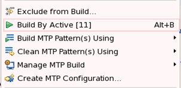
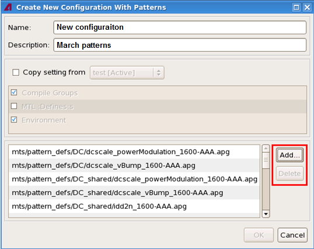

MTP build commands in the shortcut menu
The MTP build commands are dedicated to the build of MTP .apg files.
In the Project Explorer view, right-click the selected MTP .apg files or a project containing MTP .apg files, you will see these commands:

- Build By Active: Builds the .apg files with the displayed active
build configuration.
Only the .apg files belonging to the active configuration will be built.
If none of the selected .apg files belongs to the active configuration, this command will be invalid.
Note To activate a build configuration, use the Manage... function on The MTP build configuration pages, or use the Manage MTP Build command described as follows. - Build MTP Pattern(s) Using: Lists all the available build configurations of the selected .apg files, and lets you build the .apg files with a selected configuration.
- Clean MTP Pattern(s) Using: Lists all the available build configurations of the selected .apg files, and lets you clean the current project with a selected configuration.
- Manage MTP Build: Lists all the available build configurations of the
selected .apg files, and lets you select one configuration to activate it.
The Build Project, Build ALL, Clean Project, and Build By Active (see above) commands will use the active build configuration.
- Create MTP Configuration...: Lets you create a new build
configuration for the selected .apg files or for all .apg files in the selected project.
Selecting this command will open a new window, Create New Configuration with Patterns, which is demonstrated and described in the Example section below.
To view or modify the new created configuration, go to The MTP build configuration pages.
- Exclude from Build: Lists all the available build configurations of
the selected .apg files, and lets you exclude the .apg files from the selected
configurations.
After exclusion, on the Pattern Files tabs on both the MTP Build main page and The Compiler Options page, the excluded files are greyed out and highlighted with yellow colors.
To include these .apg files back, select this command and deselect the configurations.
Note MTP build configurations are created with The MTP build configuration pages.
Example
Use the Create MTP Configuration... command to create a new build configuration for a group of MTP .apg files.
The procedure is:
- In the Project Explorer view, select the .apg files for which you want to create a new build configuration.
- Right-click them and select Create MTP Configuration....
The Create New Configuration with Patterns window opens with the selected .apg files displayed:

- In the Name and Description fields, enter a name and description for the new build configuration.
- (Optional) If you want to copy settings from an existing build configuration, which has been
set up with The MTP build configuration pages, to the new configuration,
- Check Copy setting from, and select the build configuration from the combo box,
- From the other check boxes, check the settings you want to copy.
- (Optional) If you want to add other .apg files to or to remove some .apg files from the build configuration, use the Add or Delete buttons.
- Click on OK.
This window closes and the new build configuration for the displayed .apg files is created.
The new build configuration will possess either the default setups or the setups that you have copied from an existing configuration.
- To view or modify this new configuration, go to The MTP build configuration pages.
Functional changes
- Introduced in MTP 3.2.1
- MTP 3.3.2: The Build By Active command possesses a keyboard shortcut Alt + B.
- MTP 3.3.2: Adds the Add and Delete buttons to the Create New Configuration with Patterns window.